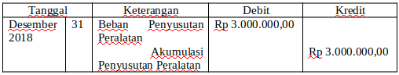

Aset Tetap berupa Tanah, Gedung, Peralatan, Mesin, Kendaraan setiap akhir periode mengalami penyusutan kecuali Tanah. Tanah tidak disusut karena aktiva tersebut tidak mengalami kerusakan. Perlengkapan habis karena dipakai tapi peralatan atau aktiva yang lain habis karena disusut. Untuk mengetahui besarnya penyusutan atau depresiasi yang terjadi pada aktva tetap ada 5 Metode Penyusutan Aktiva Tetap di Dalam Akutansi antara lain metode garis lurus, metode jumah angka tahun, metode menurun berganda, metode satuan jam kerja, dan metode satuan hasil produksi.
a. Metode Penyusutan Garis Lurus (Straight Line Method)Metode garis lurus adalah suatu metode penyusutan aktiva tetap dimana beban penyusutan aktiva tetap per tahunnya sama hingga akhir umur ekonomis aktiva tetap tersebut.
Beban Penyusutan = Tarif Penyusutan x (Harga Perolehan-Nilai Sisa)
Metode saldo menurun ganda adalah metode penyusutan aktiva tetap ditentukan berdasarkan persentase tertentu dihitung dari harga buku pada tahun yang bersangkutan.
Beban Penyusutan = {2 x (100% : umur ekonomis)} x Harga buku aktiva tetap.
Metode Jumlah Angka Tahun disebut juga sum of the years digit method, berdasarkan metode jumlah angka tahun, besarnya penyusutan aktiva tetap tiap tahun jumlahnya semakin menurun.
Beban Penyusutan = Sisa Umur Penggunaan÷ Jumlah Angka Tahun × (harga perolehan nilai residu)
Metode satuan Jam Kerja atau disebut juga Service Hours Method, dengan metode ini, beban penyusutan aktiva tetap ditetapkan berdasarkan jumlah satuan produk yang dihasilkan dalam periode yang bersangkutan.
Beban Penyusutan per tahun = Jam kerja yang dapat dicapai × Tarif penyusutan tiap jam
Tarif penyusutan per jam = Harga Perolehan-nilai residu ÷ jumlah total Jam Kerja penggunaan aktiva tetap.
Metode satuan hasil produksi atau disebut Productive Output Method, Menurut metode ini beban penyusutan aktiva tetap ditetapkan berdasarkan jumlah satuan produk yang dihasilkan dalam periode yang bersangkutan.
Beban Penyusutan per tahun = Jumlah satuan produk yang dihasilkan × Tarif penyusutan per produk
Tarif penyusutan per satuan produk = Harga Perolehan Nilai Residu ÷ jumlah total produk yang dihasilkan
Contoh Soal: PD. Sang Surya pada Januari 2018 membeli mesin dengan Harga Perolehan Rp 20.000.000. Nilai Residu sebesar Rp 5.000.000. Umur Ekonomis selama 5 tahun. Berapa penyusutan tiap tahunnya?
Jawaban : Perhitungan : Depresias = (Harga Perolehan - Nilai Residu) : Umur Ekonomis = (20.000.000-5.000.000) : 5 = 3.000.000 Jurnal Penyesuaian: 